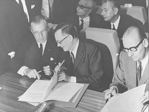
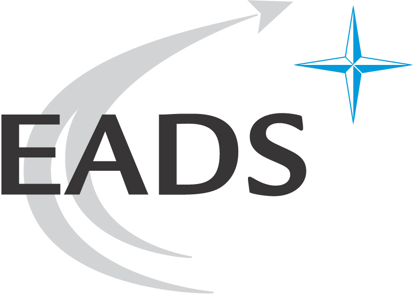

| |
| |
Originally, the Airbus Industrie started as a consortium of European Aviation to compete with the big American aircraft companies.
In the mid-1960s, there were negotiations based on a European collaborative approach.
Individual aircraft companies had already imagined of such a requirement; in 1959 Hawker Siddeley had advertised an "Airbus" version of the
Armstrong Whitworth AW.660 Argosy, which would "be able to lift as many as 126 passengers on ultra short routes at a direct operating cost of 2d. per seat mile."
However, European aircraft manufacturers were aware of the risks of such a development and began to accept, along with their governments, that collaboration was required to develop such an aircraft and to compete with the US manufacturers.
At the 1965 Paris Air Show major European airlines informally discussed their requirements for a new "airbus" capable of transporting 100 or more passengers over short to medium distances at a low cost.The same year Hawker Siddeley (at the urging of the UK government) teamed with Breguet and Nord to study airbus designs.
The Hawker Siddeley/Breguet/Nord groups HBN 100 became the basis for the continuation of the project. By 1966 the partners were Sud Aviation, Aérospatiale (France), Arbeitsgemeinschaft Airbus, Deutsche Airbus (Germany) and Hawker Siddeley (UK). A request for funding was made to the three governments in October 1966.
On 25 July 1967 the three governments agreed to proceed with the proposal.
In the two years following this agreement, both the British and French governments expressed doubts about the project. The MoU had stated that 75 orders had to be achieved by 31 July 1968.
The French government threatened to leave from the project due to the concern over funding development of the Airbus A300, Concorde and the Dassault Mercure concurrently. but was persuaded otherwise.
Having announced its concern at the A300B proposal in December 1968, and fearing it would not recoup its investment due to lack of sales, the British government announced its withdrawal on 10 April 1969.
Germany capitalized on this opportunity and increased its share of the project to 50%. Given the participation by Hawker Siddeley up to that point, France and Germany were reluctant to take over its wing design.
Thus the British company was allowed to continue as a privileged subcontractor. Hawker Siddeley invested GB£35 million in tooling and, requiring more capital, received a GB£35 million loan from the German government.
Airbus Industrie was formally established as a Groupement d'Interet Économique (Economic Interest Group or GIE) on 18 December 1970. It had been formed by a government initiative between France, Germany and the UK that originated in 1967. The name "Airbus" was taken from a non-proprietary term used by the airline industry in the 1960s to refer to a commercial aircraft of a certain size and range, for this term was acceptable to the French linguistically. Aérospatiale and Deutsche Airbus each took a 36.5% share of production work, Hawker Siddeley 20% and Fokker-VFW 7%. Each company would deliver its sections as fully equipped, ready-to-fly items. In October 1971 the Spanish company CASA acquired a 4.2% share of the Airbus Industrie, with Aérospatiale and Deutsche Airbus reducing their stakes to 47.9%. In January 1979 British Aerospace, which had absorbed Hawker Siddeley in 1977, acquired a 20% share of Airbus Industrie. The majority shareholders reduced their shares to 37.9%, while CASA retained its 4.2%.
The retention of production and engineering assets by the partner companies in effect made the Airbus Industrie a sales and marketing company.
This arrangement led to inefficiencies since there were inherent conflicts of interest that the four partner companies faced; they were both GIE shareholders of, and subcontractors to, the consortium.
The companies collaborated on development of the Airbus range, but guarded the financial details of their own production activities and sought to maximise the transfer prices of their sub-assemblies.
It was becoming clear that Airbus was no longer a temporary collaboration to produce a single plane as per its original mission statement, it had become a long term brand for the development of further aircraft.
By the late 1980s work had begun on a pair of new medium-sized aircraft, the biggest to be produced at this point under the Airbus name, the Airbus A330 and the Airbus A340.
In the early 1990s the then Airbus CEO Jean Pierson argued that the GIE should be abandoned and Airbus established as a conventional company.
However, the difficulties of integrating and valuing the assets of four companies, as well as legal issues, delayed the initiative.
In December 1998, when it was reported that British Aerospace and DASA were close to merging, Aérospatiale paralysed negotiations on the Airbus conversion; the French company feared the combined BAe/DASA, which would own 57.9% of Airbus, would dominate the company and it insisted on a 50/50 split.
However the issue was resolved in January 1999 when BAe abandoned talks with DASA in favour of merging with Marconi Electronic Systems to become BAE Systems. Later in 2000, three of the four partner companies (DaimlerChrysler Aerospace, successor to Deutsche Airbus; Aérospatiale-Matra, successor to Sud-Aviation; and CASA) merged to form EADS.
EADS now owned Airbus France, Airbus Deutschland and Airbus España, and thus 80% of Airbus Industrie. BAE Systems and EADS transferred their production assets to the new company, Airbus SAS, in return for shareholdings in that company.
| The signing of the A300B project- Airbus' first aircraft | Official logo of EADS- Current Airbus Consortium |
|---|---|
|  |  |